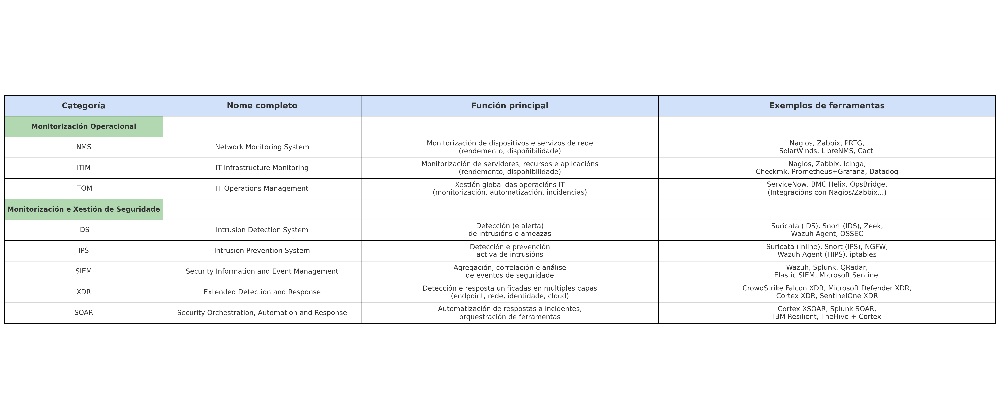

Clasificación de Ferramentas de Monitorización e Seguridade
Aquí detállanse as principais categorías de ferramentas usadas para a monitorización operacional e de seguridade:
Monitorización Operacional
-
NMS (Network Monitoring System): Un Sistema de Monitorización de Rede é unha ferramenta ou conxunto de ferramentas dedicadas a supervisar o estado, dispoñibilidade e rendemento dos dispositivos e enlaces de rede. Entre os elementos que pode monitorizar inclúense routers, switches, interfaces, ancho de banda, latencia, etc. Adoitan empregar protocolos como SNMP.
- Ex: Nagios, Zabbix, PRTG Network Monitor, SolarWinds NPM, LibreNMS, Cacti.
-
ITIM (IT Infrastructure Monitoring): Abrangue a monitorización de toda a infraestrutura IT, incluíndo servidores (SO, CPU, memoria, disco), servizos, procesos, aplicacións e bases de datos. O obxectivo é detectar rapidamente calquera fallo ou comportamento anómalo que poida afectar á dispoñibilidade ou rendemento dos servizos IT.
- Ex: Nagios, Zabbix, Icinga, Checkmk, Prometheus + Grafana, Datadog.
-
ITOM (IT Operations Management): Representa unha categoría máis ampla que engloba a xestión global das operacións IT. Combina a monitorización (NMS/ITIM) con automatización de tarefas, xestión de incidencias, inventario, xestión de configuracións e integracións con sistemas de alerta ou helpdesk para optimizar a xestión da infraestrutura.
- Ex: ServiceNow ITOM, BMC Helix Operations Management, Micro Focus Operations Bridge. Moitas solucións ITOM integran ferramentas de monitorización como Nagios ou Zabbix para a recolección de datos.
Monitorización e Xestión de Seguridade
-
SIEM (Security Information and Event Management): Un sistema que agrega e analiza (correlaciona) logs e eventos de múltiples fontes (servidores, redes, firewalls, IDS/IPS, aplicacións) para detectar ameazas de seguridade, investigar incidentes e xerar informes, ofrecendo unha visión centralizada da seguridade.
- Ex: Wazuh, Splunk, QRadar (IBM), Elastic SIEM (ELK Stack), Microsoft Sentinel.
-
IDS (Intrusion Detection System): Un sistema de detección de intrusións que monitorea o tráfico de rede (NIDS) ou os eventos dun sistema (HIDS) para identificar actividades maliciosas ou anomalías e xerar alertas.
- Ex NIDS: Suricata (modo IDS), Snort (modo IDS), Zeek.
- Ex HIDS: Wazuh Agent, OSSEC, Elastic Agent (Fleet).
-
IPS (Intrusion Prevention System): Un sistema que non só detecta ataques (como un IDS), senón que tamén pode bloquear ou mitigar automaticamente as ameazas en tempo real (NIPS ou HIPS).
- Ex NIPS: Suricata (modo inline), Snort (modo IPS), Firewalls de Nova Xeración (NGFW).
- Ex HIPS: Wazuh Agent (con regras e resposta activa configuradas), Windows Defender (con políticas de prevención), Software Antivirus/Endpoint Security avanzado, iptables (con regras de bloqueo automatizadas).
-
XDR (Extended Detection and Response): Un sistema que amplía a detección e resposta fronte a ameazas mediante a integración de múltiples fontes (endpoint, rede, identidade, cloud...), correlacionando eventos e aplicando resposta automatizada nunha soa plataforma centralizada.
- Ex: CrowdStrike Falcon XDR, Microsoft Defender XDR, Cortex XDR (Palo Alto), SentinelOne Singularity XDR.
🛈 Nota sobre Wazuh e XDR: Aínda que Wazuh non é un XDR completo, integra funcionalidades clave como detección en endpoint (HIDS), análise de logs (SIEM), resposta activa e recoñecemento de vulnerabilidades, ofrecendo unha aproximación sólida a XDR en contornos locais. Non obstante, non inclúe nativamente detección en rede, identidade, correo ou nube, nin resposta orquestrada multicanle, polo que debe considerarse unha solución SIEM/HIDS avanzada con capacidades EDR/HIPS, pero non un XDR integral.
-
SOAR (Security Orchestration, Automation and Response): Plataformas que permiten automatizar fluxos de traballo de seguridade, orquestrar ferramentas diversas (SIEM, EDR, ticketing, etc.) e executar respostas automatizadas fronte a incidentes, mellorando o tempo de resposta e a eficiencia operativa.
- Ex: Cortex XSOAR, Splunk SOAR, IBM Resilient, TheHive + Cortex.
-
Diferenzas clave entre IDS e IPS:
- IDS: Detecta e alerta. Non bloquea activamente.
- IPS: Detecta e bloquea/prevén activamente.
- Nota sobre Suricata:
- Por defecto actúa como IDS (modo pasivo, só xera alertas).
- En modo inline (ex: con
NFQUEUE), pode funcionar como IPS, bloqueando tráfico malicioso segundo as regras configuradas.
Resumo visual da clasificación
